Andrew Lonsdale
Junior Software
SUMMARY
A highly motivated, adaptable individual, with excellent interpersonal skills. Strengths in problem identification, methodical, with great attention to detail. Unafraid of challenge, ability to work under pressure and use effective time management skills to deliver high quality results, consistently within deadlines
Work well as an individual as well as a great team player, able to perform repetitive tasks with ease, extremely patient, with a disciplined approach. Strong ambition to pursue a career in a role that will allow me to develop, and use my excellent technical skills.
EXPERIENCE
(November 2016 - Present)
SOFTWARE DEVELOPMENT
CODECLAN
SQA Level 8 /HND
- Orientated Programming
- TDD -- Test Driven Development
- Android App Development
- HTTP And Web Application Development
- Front End Development
- Back End Development
- Full Stack Development
- Databases
- Asynchronous Programming
- Functional Programming Techniques
Ruby, Ruby on Rails, Java, Android, HTML, CSS, Sinatra, JavaScript, React.JS, UNIX, Npm, Webpack, Node, Express, PostgreSQL, SQL, Babel, and Git/Github.
(May 2015 - November 2016)
BUSINESS ANALYST
ROYAL BANK OF SCOTLAND
CASH & ATM OPERATIONS
- Excellent Excel technical skills and RBS ATM systems knowledge
- Deliver a high level of customer service through accurate investigations, gathering MI to ensure that SLAs are met.
- Great attention to detail ensuring the quality of my work exceeds expected level of accuracy and productivity required, exceeding targets in line with Centre objectives.
- Establish key relationships with various parts of the business through excellent communication skills both verbally and written.
- Proactive in Continuous improvement activities simplifying processes by introducing automation through VBA (Visual Basics for applications) with EUDA (End User Developed Applications) to support change.
- Updates to process diagrams with any improvements, for use in future training.
- Completion of regular training to new team members, with ongoing coaching as the SME (Subject Matter Expert) in the teams processes.
(January 2015 - May 2015)
ANALYST
RBS - MANPOWER
BANKLINE ADDITIONAL ACCOUNTS
- Proficient in the use of the Bankline systems used for Business customer payments.
- Deliver a high level of customer service to Bankline business customers through telephony security calls
- Great attention to detail ensuring the quality of my work exceeds expected level of accuracy required
- Exceed productivity and quality targets in line with Centre objectives.
- Display excellent communication skills both verbally and written
- Contribution in Service Improvements and Lean activities, completing updates of Process diagrams, for use in future training.
- Completion of Bankline project, effective planning and management of tasks and MI to achieve successful outcome for our customers and the department.
(MARCH 2011 - JANUARY 2015)
SALE STOCK ASSOCIATE
ASDA
Ambient
REFERENCES
Available on request